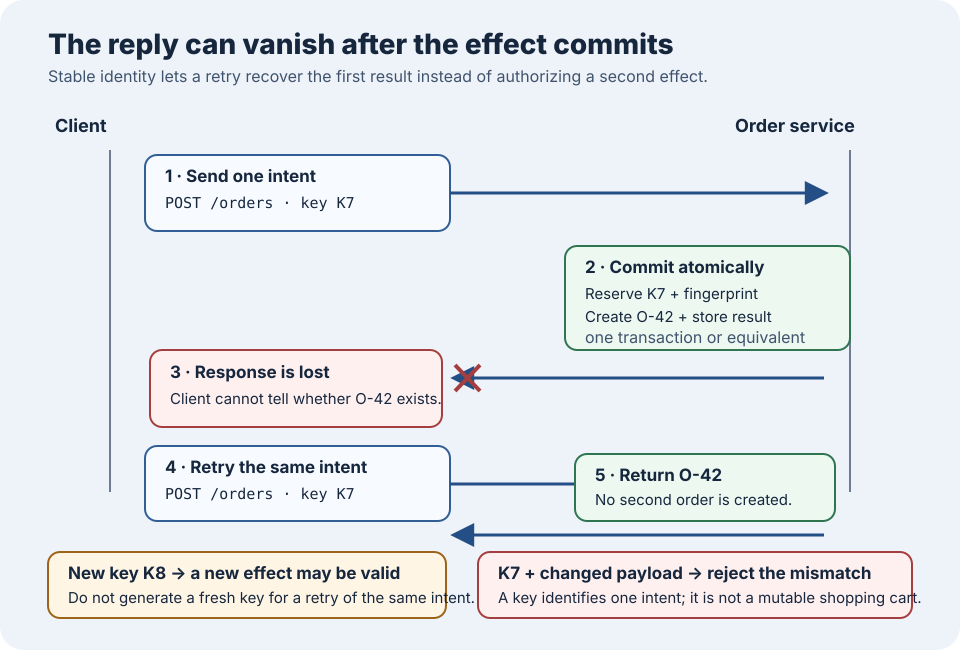

01 · Ambiguous outcome
No response does not mean no effect
A create request crosses several boundaries: client, network, service and database. The service can commit an order and then lose the response. The client sees the same timeout it would see if the request never arrived, so it cannot choose a safe retry from transport evidence alone.

Text equivalent: request one sends key K7. The service records K7, the request fingerprint and result O-42 atomically. Its reply is lost. Request two reuses K7, so the service returns O-42. A fresh key could authorize another effect; changed content under K7 is an error.
02 · Contract
The key names one caller’s one intent
An idempotency key is an application-level protocol. The client creates a unique value and reuses it only for retries of the same intent. The service scopes it to the authenticated caller and operation, compares a request fingerprint, and stores the outcome for a documented retention window.
Identity
caller + operation + key selects one intent. The key is not a credential and must not cross callers.
Fingerprint
Fields that change the effect—items, quantity, destination—must match the first accepted request.
Outcome
A completed retry returns the recorded status and result; a concurrent duplicate follows the API’s wait or conflict rule.
Standards boundary: HTTP defines safe and idempotent methods, but POST is not automatically retryable. The cited Idempotency-Key header specification is an active Internet-Draft, not an RFC. A client cannot assume a server implements it.
03 · Worked example
Two notebooks, one order
| Moment | State | Safe behavior |
|---|---|---|
| First request | K7 + fingerprint for two notebooks and standard shipping | Reserve the key while creating O-42 and storing its response. |
| Reply lost | Client knows only that the outcome is ambiguous | Do not invent a new identity. |
| Same-intent retry | K7 + matching fingerprint | Return recorded order O-42. |
| Changed request | K7 + three notebooks | Reject the mismatch; reconcile the first intent before creating another. |
Atomicity is the hinge: if the service creates the order and records the key in separate uncoordinated steps, a crash between them can still duplicate the effect. Use one transaction or a protocol with an equivalent recovery guarantee.
04 · Failure modes
Four ways a key can give false confidence
- Store after the side effect: a crash opens a duplicate window.
- Skip the fingerprint: one key can silently mutate into another intent.
- Scope only by key: another caller’s matching value can expose or suppress a result.
- Hide retention and concurrency: late or simultaneous retries behave unpredictably.
Downstream email, inventory or payment effects need the same identity discipline. A database row alone does not make external side effects atomic.
05 · Practice
Write a 15-minute retry contract
- Pick one non-idempotent create operation. Name the exact caller intent and fields that change its effect.
- Fill in: key scope, fingerprint fields, atomic storage boundary, retained response, retention window, in-flight duplicate behavior and mismatch response.
- Walk three cases: response lost after commit, same key with changed content, and two concurrent requests with one key.
Success: a client author and service author independently predict the same result for all three cases.
Knowledge check
- Why can a timeout not prove that no order exists?
- When should a retry reuse a key?
- What must the server do with the key and side effect?
Reveal answer guidance
- The service may have committed before its response was lost.
- Only for the same caller, operation and intent, within the API’s documented retention contract.
- Bind the scoped key, request fingerprint and outcome atomically, then return that outcome to matching retries.
06 · Evidence
Separate the standard from the design pattern
RFC 9110 defines HTTP method idempotency and retry boundaries. The IETF Idempotency-Key Internet-Draft describes a proposed header and application responsibilities. The AWS Builders’ Library supplies one production-oriented implementation perspective. Claim mapping and status are in the source ledger.